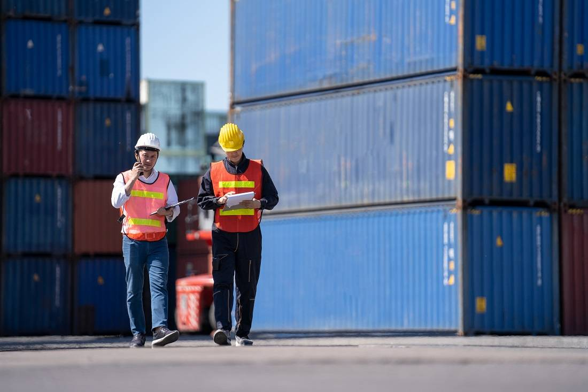
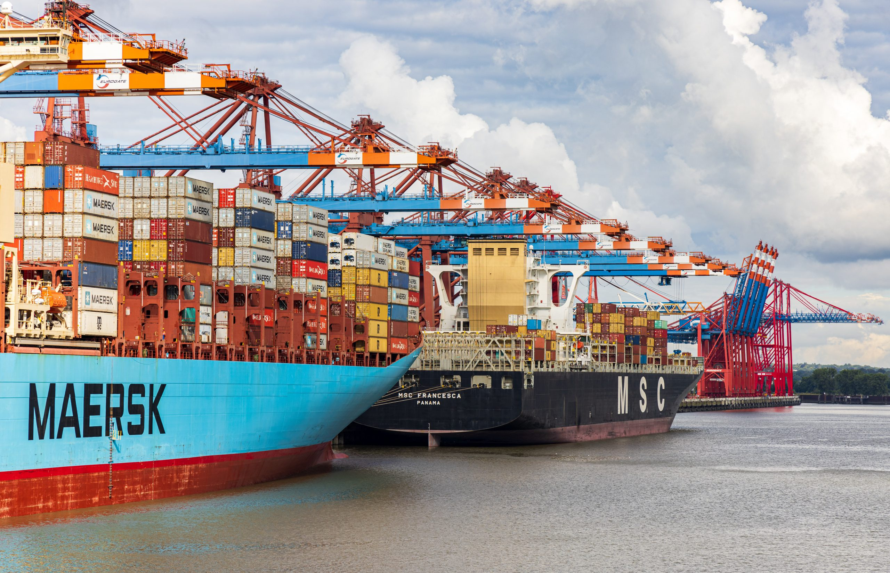
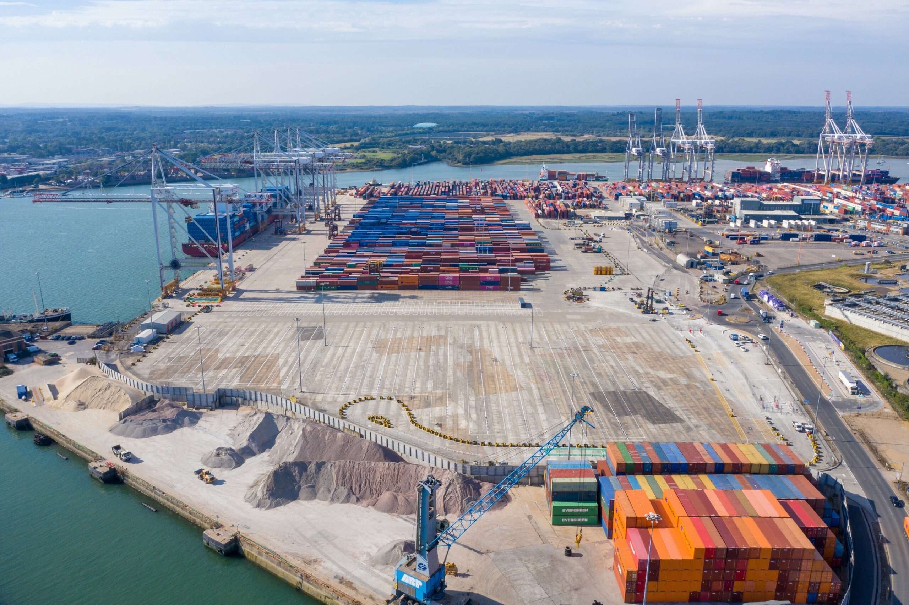

Massive Dockworker Strike Paralyzes U.S. East and Gulf Coast Ports
On October 1, 2024, dockworkers from New England to Texas launched a massive strike, halting operations at major U.S. ports. Nearly 50,000 members of the International Longshoremen's Association (ILA) walked off the job after failing to agree on a new contract with the U.S. Maritime Alliance (USMX). This sudden strike, encompassing ports along the Eastern Seaboard and the Gulf Coast, has already caused significant disruptions to the U.S. supply chain.
The Lead-Up to the Strike
The ILA's contract with USMX expired on September 30, 2024, following a six-year agreement. Both parties had been negotiating for months but could not reach a new deal. Central issues include worker wages, job security in the face of increasing automation, and improved safety measures.
Economic Implications of the Strike
The economic consequences of this strike are expected to be enormous. Ports affected by the strike handle a significant portion of the country's imports and exports. With port operations stalled, industries such as automotive, retail, and manufacturing face shortages and delays.
Political Ramifications
With the U.S. presidential election just weeks away, the strike has become a political issue. Vice President Kamala Harris faces pressure from labor unions, while President Biden may invoke the Taft-Hartley Act, forcing workers back to the job for a 60-day cooling-off period.
What This Means for Consumers
For consumers, the dockworker strike could lead to higher prices and longer wait times for goods. Delays in unloading cargo at ports will make it difficult for stores to stock shelves, and some items may become scarce.
Port-Specific Disruptions
The strike has heavily impacted some of the largest U.S. ports:
- Port of New York and New Jersey: Over 100,000 cargo containers are sitting idle.
- Port of Houston: The largest port in the Gulf Coast region has come to a standstill.
- Port of Charleston: A crucial hub for the automotive and manufacturing industries is facing backlogs.
The Road Ahead
There is no immediate end in sight for the strike. The ILA has pledged to continue until their demands for better wages and job security are met. Businesses and consumers are bracing for potential long-term disruptions.
Conclusion
The 2024 dockworker strike is shaping up to be one of the most significant labor disputes in recent U.S. history, with far-reaching consequences for the economy, politics, and everyday consumers. As negotiations continue, businesses, consumers, and political leaders alike will be watching closely.